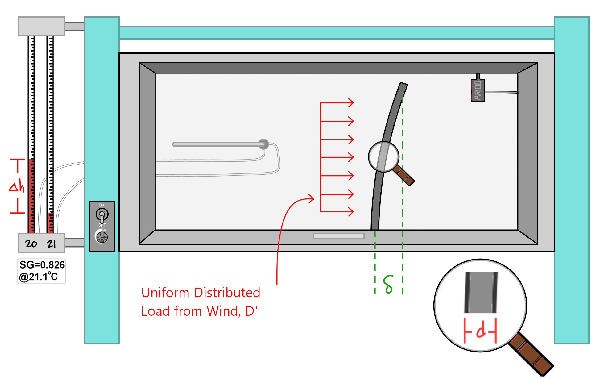
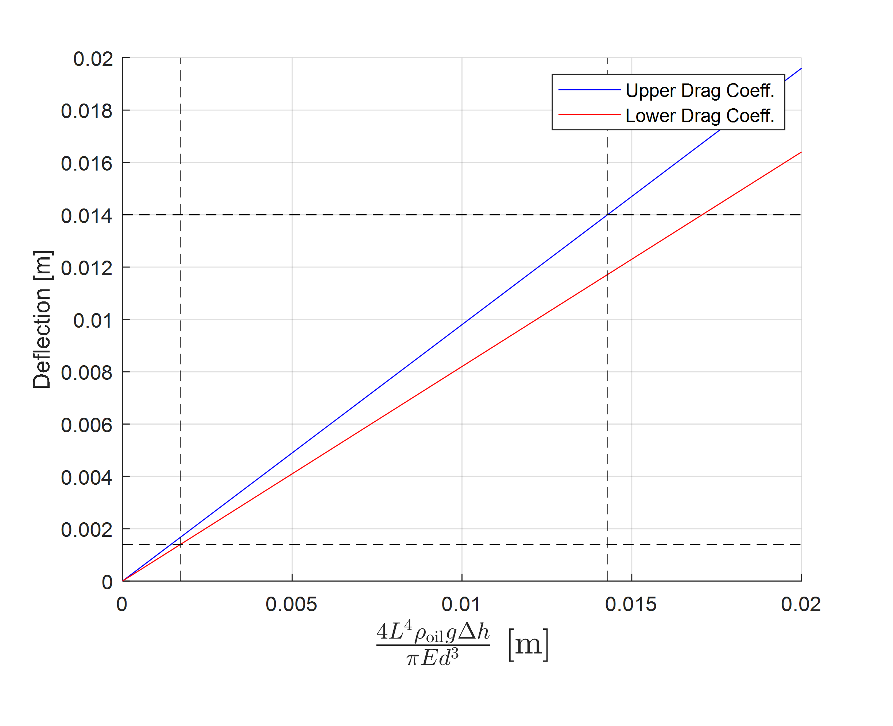
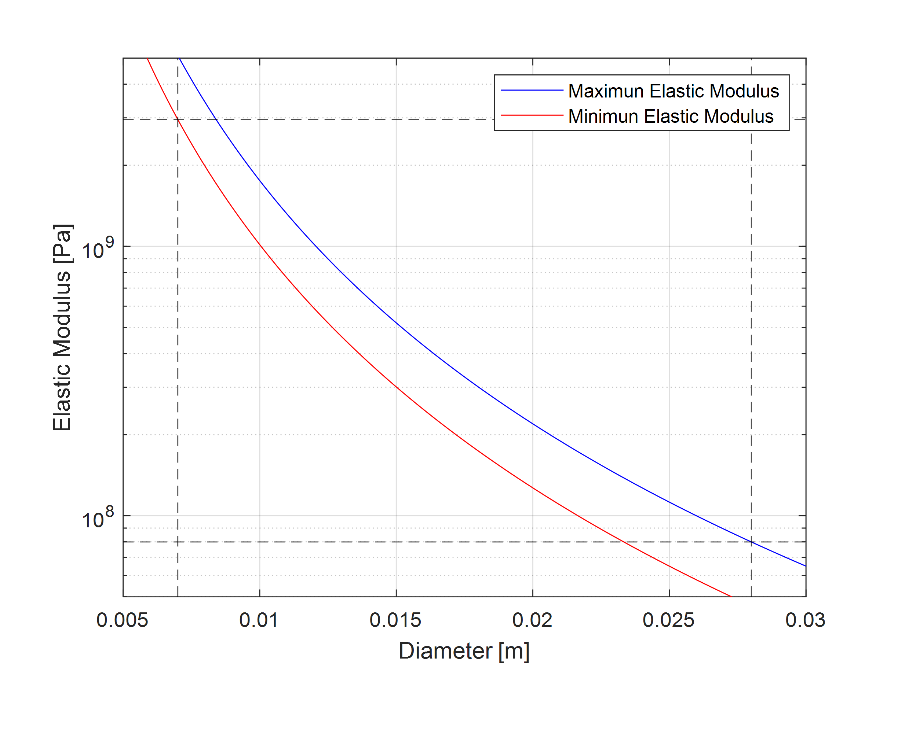

Measurement-system design
Wind-tunnel drag measurement design
Inferring aerodynamic drag from a flexible rod’s deflection.
- Timeline
- Apr — May 2025
- Context
- Experimental-design study
- Tools & methods
Team: Josh McManus, Jacob Cockerill, Anders Caldwell, Colin Young

Overview
Our team developed an experimental plan to estimate the low-speed drag coefficient of a flexible cylindrical rod in a wind tunnel. The challenge was to choose a specimen and measurement system that would produce a detectable deflection while meeting a specified uncertainty target. The project focused on measurement design and analysis, rather than a completed wind-tunnel test campaign.
Connecting deflection to drag
The proposed method treated the rod as a cantilever under distributed aerodynamic loading. Tip displacement, rod geometry, material stiffness, and dynamic pressure formed the basis of the data-reduction model. A laser sensor would measure deflection, while a Pitot-static tube and manometer would provide the pressure measurement.
Selecting the specimen and instruments
We used design-space analysis to consider combinations of rod diameter, material stiffness, and tunnel conditions. The report selected a 280 mm long, 12.7 mm diameter HDPE rod as a candidate. The design had to fit the tunnel, stay within its 55 m/s maximum velocity, and keep tip deflection below 5% of rod length to support the small-deflection assumption.
| Quantity | Instrument or input |
|---|---|
| Tip deflection | Laser displacement sensor |
| Rod length and diameter | Calipers |
| Dynamic pressure | Pitot-static tube and manometer |
| Elastic modulus | Material data and assumed uncertainty |
Designing around uncertainty
We propagated input uncertainties through the measurement model to assess which quantities would most affect the drag estimate. In the proposed budget, uncertainty in the rod’s elastic modulus dominated the instrument contributions. That finding made material characterization an important consideration alongside sensor resolution.
Outcome and next steps
The deliverable was a measurement procedure, a candidate specimen, and an uncertainty-based rationale for the instrument choices. Establishing actual performance would require checking the data-reduction model, characterizing the rod’s stiffness, and collecting repeated wind-tunnel measurements. The central lesson was that selecting a precise sensor is only one part of designing a reliable measurement.
Project details

Open full-size figure

Open full-size figure